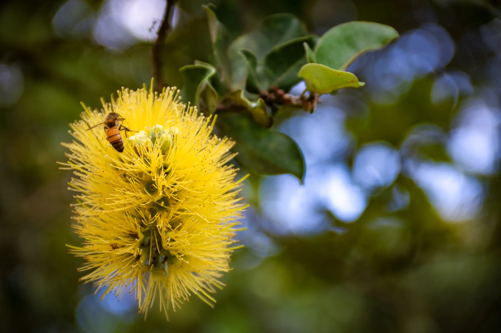

← All galleries
Botany & Blooms
Flowers, leaves, light, and the little discoveries waiting right in front of us.
8 selected photographs
← Back to portfolio
A visitor on the ʻōhiʻa1 / 8
Swipe the photographs sideways or use the arrows. Tap the large image to see it full screen.
Keep exploring